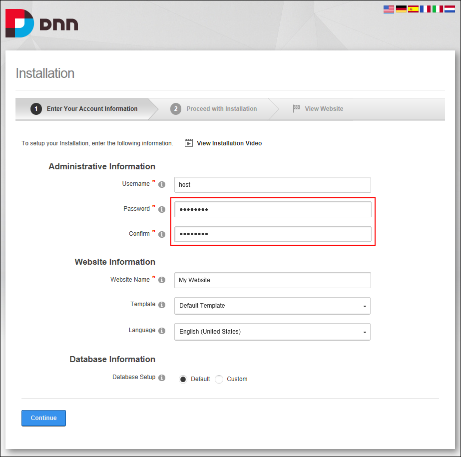
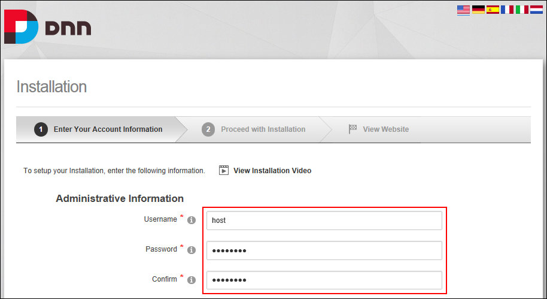
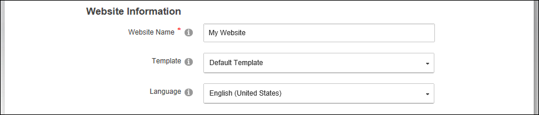
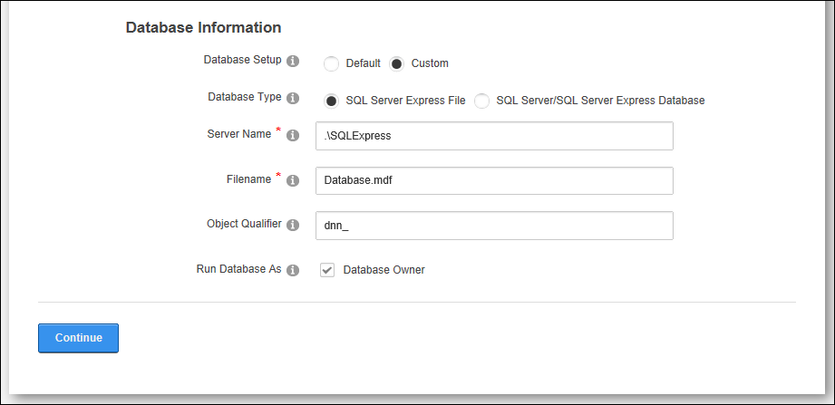
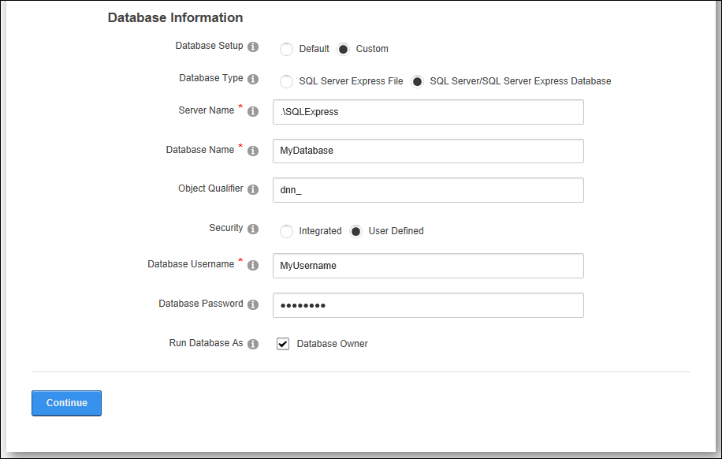
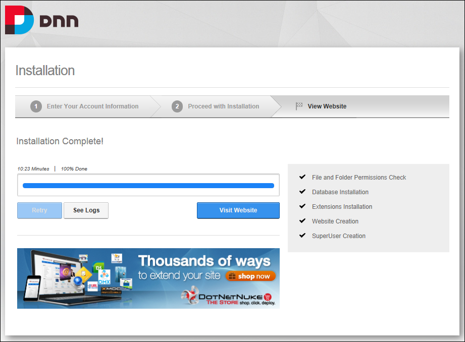
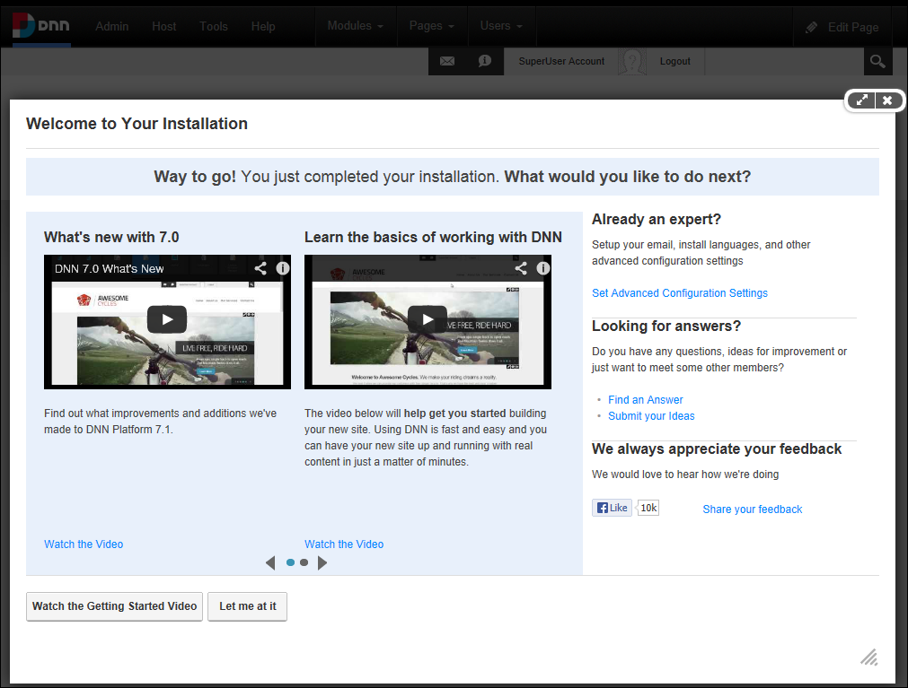
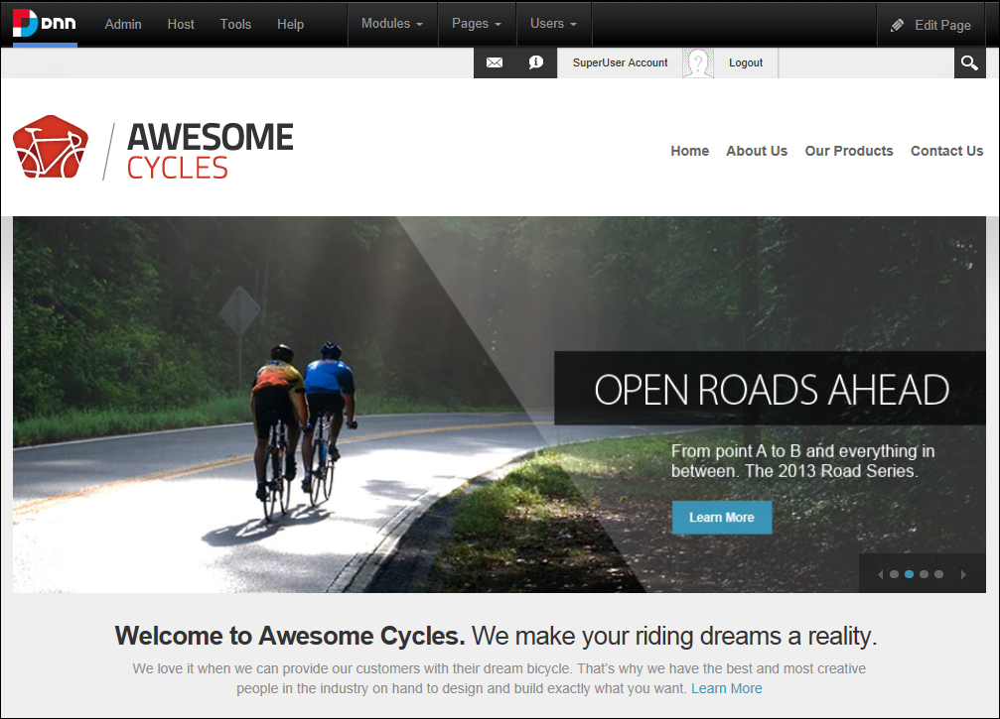

Installing DNN
Installing DNN is a one step process to create your new website. The installation will detect your current language and if it is either English, French, German, Spanish, Italian or Dutch, the installer will automatically display in your language. The default installation will create either a blank website or a website with helpful information on getting started and some sample content. If you are using Evoq Content or Evoq Content Enterprise, you can also choose a mobile website template. The default installation will install a WYSIWYG rich text editor for managing the content and files on your website. Each of the templates is available in English, French, German, Spanish, Italian and Dutch.
Prerequisite. An SQL Server or SQL Server Express Database. Note: If you are using a Microsoft Azure database, review the Installation Guide for set-up assistance.
Note: If you are installing your DNN database on SQL Azure, the connectivity from DNN application may be slower. This occurs because SQL Azure is a cloud service and the latency between the database and the application is increased. To avoid a timeout error during DNN installation, it is recommended that you manually increase the http timeout (System.Web.HttpException: Request timed out) in the Web.config file by adding an executionTimeout setting under httpRuntime prior to installation. Note: Keyword "executionTimeout" is case-sensitive. In the below configuration setting, a value of 900 indicates 15 minutes which is more than enough for any installation. It is recommended that you remove this setting once installation is complete.
<httpRuntimeuseFullyQualifiedRedirectUrl="true"maxRequestLength="8192"
requestLengthDiskThreshold="8192"executionTimeout="900" />
Option 1: One Click Installation
To quickly install DNN and accept all the default settings, all you need to do is fill in the two password fields (Password and Confirm) and then click the Continue button.

Option 2: Custom Installation
- The Administrative Information section you will enter the information for the SuperUser Account. This account has access to all sites created within this installation. We recommend using a strong password, for example: at least 7 characters long and including a mix of letters, numbers and symbols. Important. This SuperUser account is referred to as the Host account throughout this manual. Note: Each time you create new sites in this DNN installation you will need to enter information to create an Administrator account for each site. These Administrators only have access to manage their own site, complete these details.
- Optional. In the Username text box, enter a user name for the Host account. The default value is host.
- In the Password text box, enter a password for the Host account.
- In the Confirm text box, re-enter the password for the Host account.

- In the Website Information section, complete these details:
- In the Website Title text box, enter a title for the website.
- At Template, select the site template (pages and content) to be used for the first website that is created from these options:
- Blank Template: Select to create the first website without using a template. This creates a site without any pages or content pre-added.
- Default Template: Select to create a small sample website that provides useful information, movies and links on how to get started building your website. This template is available in a several languages allowing you to create a sample site in your preferred language. If you choose a template in a language other than English, the language pack for the chosen language will be installed on your site and this language will be set as the default site language. In addition, the usual default site language of English will be disabled, but not removed, on your site. Spanish language has been selected for this tutorial.
- Mobile Template: Select to build a website suitable for a mobile device.
- At Language, select the language you want to use for your website. The default setting is English (United States).

- In the Database Connection section, you will configure the settings used by DNN to connect to a database. DNN is a content management system that stores information about your website in a database. If you are installing DNN in a "Hosting Account" your provider should have provided you with this information previously. Select from these options:
- At Database Setup, select one of the following options and complete the associated settings:
- Default: If you are installing DNN on your local system, it is recommended that you utilize the default options. If you choose this option you are finished entering information and can now click the Continue button.
- Custom: Select from these options:
- SQL Server Express File:
- In the Server Name text box, enter the Name or IP Address of the computer where the Database is located.
- In the Filename text box, enter the name of the Database File (located in the App_Data Directory).
- Optional. In the Object Qualifier text box, enter a prefix to use for all your database objects. This is helpful for avoiding object name clashes. Note: The Object Qualifier must start with a letter and be no longer than 50 characters. E.g. dnn_
- At Run Database As, select from these options:
- at Database Owner if you are running the database as the database owner.
- at Database Owner if you will be running as the User ID specified.

- or SQL Server/SQL Server Express Database:
- In the Server text box, enter the Name or IP Address of the computer where the Database is located.
- In the Database Name text box, enter the Database name which you have previously created on the SQL server.
- Optional. In the Object Qualifier text box, enter a "prefix" to use for all your database objects. This helps ensure that there are no object name clashes. E.g. dnn_
- At Security, select from these options:
- Integrated: Select if you are using SQL Server's Integrated Security and will be using your Windows account to access SQL Server. If you are using SQL Server Express then you will most likely need to check this option.
- User Defined: Select if you have been given a User ID/Password to access your Database and provide the User ID/Password combination.
- In the User ID text box, enter the User ID for the Database.
- In the Password text box, enter the Password for the Database.
- At Run Database As, select from these options:
- at Database Owner if you are running the database as Database Owner.
- at Database Owner if you will be running as the User ID specified.

- Click the Continue button. This will being the installation process and the progress of the installation will show up as a progress bar and also the list of major steps will show a tick next to them as they are completed. A typical installation will take around one minute and you can see how long your installation is taking as part of the progress bar.
- Click the Visit Website button to go to the newly created website. This displays the Welcome To Your DNN Installation page where you can choose from a range of helpful resources to help you get started with your DNN site, or simply click the Let Me At It button to close this window and view your site.

Note: If you are using SQL Azure you can check that the objects were successfully created in the SQL Azure database by running the following SQL queries using the SQL Server Management studio. Note: The counts are rough counts for a typical DNN 7+ Platform installation.
--list tables (154 records)
SELECT COUNT(*) FROM sys.Tables
--list stored procedures (869 records)
SELECT COUNT(*) FROM sys.objects
WHERE type = 'P'
--list indexes (402 records)
SELECT COUNT(*) FROM sys.indexes
Your newly installed website will be displayed once the installation is completed and you will be logged in to the SuperUser Account.
Important. The User account created during install is both a Host and Admin user. This user only shows up under the Host SuperUser Accounts page. No users will show up under Admin User Accounts.
Best Practice: The Host (SuperUser) account that is created during installation should be disabled after creating a new SuperUser account by going to Host > SuperUsers. Everyone should do this always. This new SuperUser account will not be visible under Admin > Users therefore no Admin will be able to alter the Host account.
